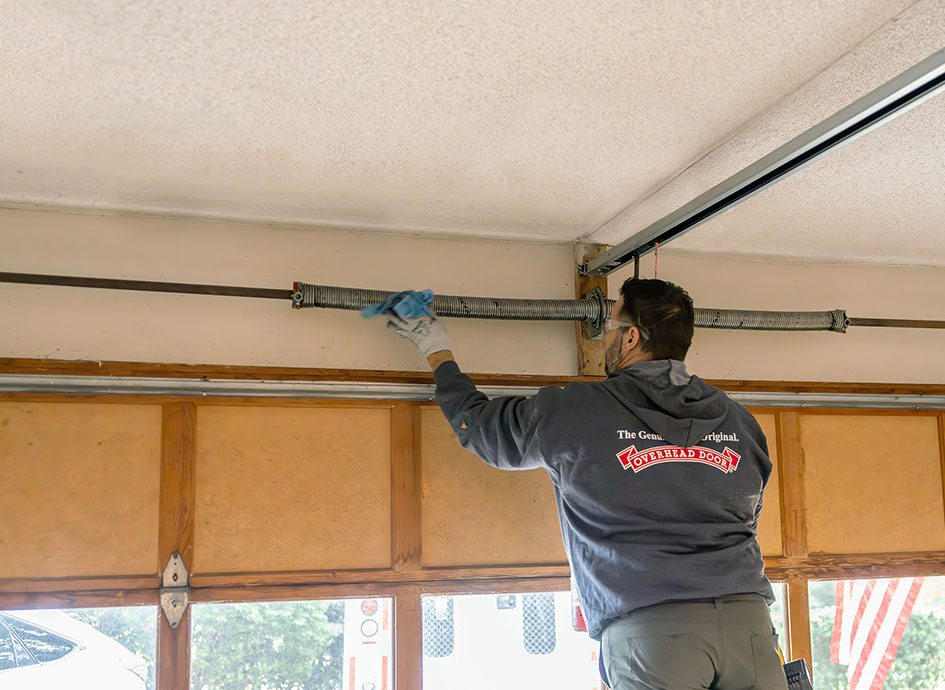

Springs & cables
A loud bang, loose cable, or door that suddenly feels stuck. Keep clear and request professional service.
Request repairDoor repair, opener help, and preventive maintenance for homes and businesses. We service most makes and models.
Stuck open, stuck closed, or making a new sound? Start a request with the door’s position, your address, and the impact on access.

A loud bang, loose cable, or door that suddenly feels stuck. Keep clear and request professional service.
Request repairAn unresponsive opener, remote, keypad, or wall button. Brand and model are helpful if already known.
Get opener helpImpact damage, uneven travel, or new scraping and grinding noises. Assess whether individual sections can be repaired or replaced.
Assess repair vs replacementChoose a service and share what you know. No technical knowledge required.
We’ll review your request and confirm the next step and availability.
From a repair to a new door, we’ll help you understand your options.
The technician inspects the door, hardware, tracks, and opener, checks operation as appropriate, and explains any defects or recommendations.
Our published service fees are $75 for residential calls, $100 for commercial calls, and $140 per hour when a man lift is needed, with a one-hour minimum. Please confirm current rates, parts, and additional charges with our office before scheduling.
We offer free estimates. If we perform work during a visit, it becomes a chargeable service call. Our office can explain what applies to your request.
Our service terms include 30 days of labor coverage on service calls and one year on items we sell and install. Contact our office to confirm the coverage for your job.
Please confirm current rates, parts, and coverage with our office before booking.
Tell us what you need. Our Amarillo team will take it from there.